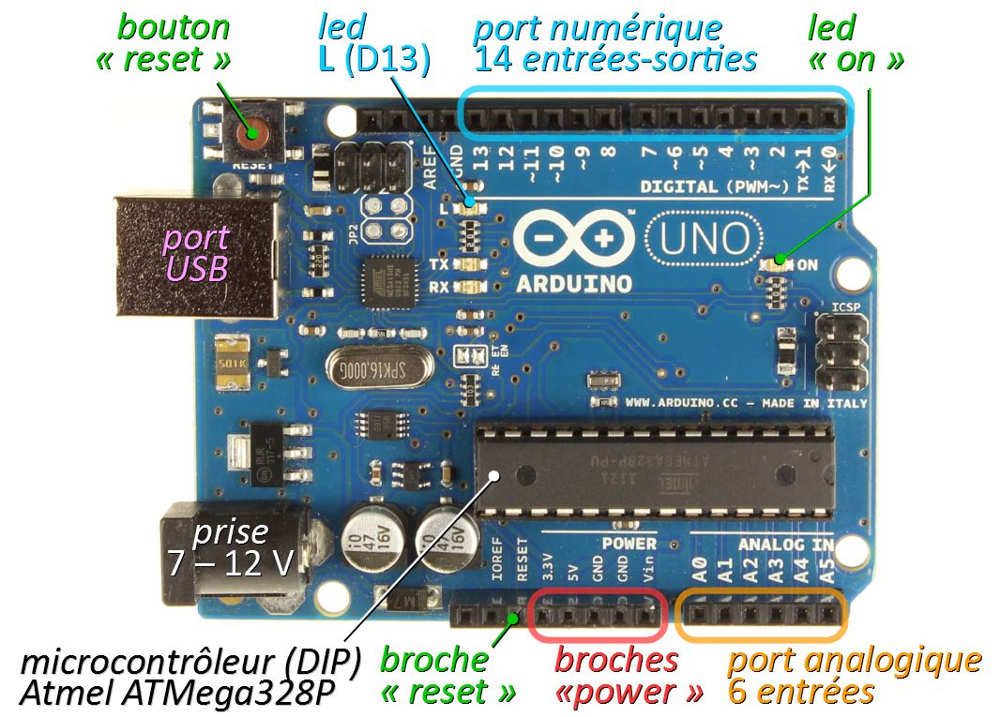
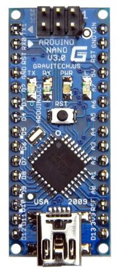
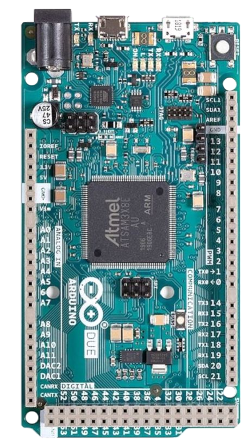
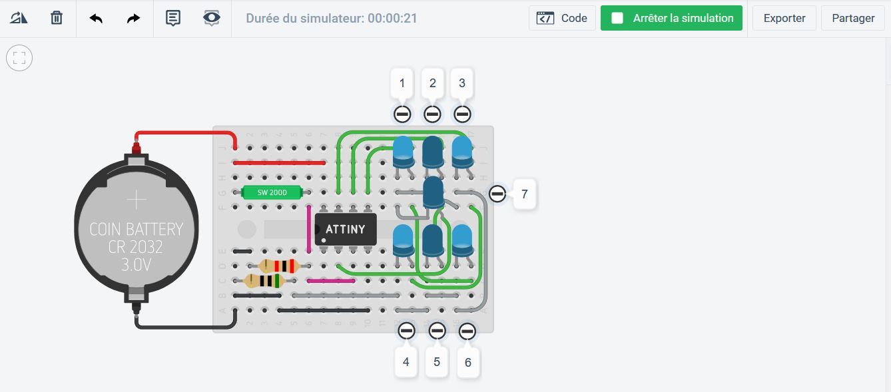
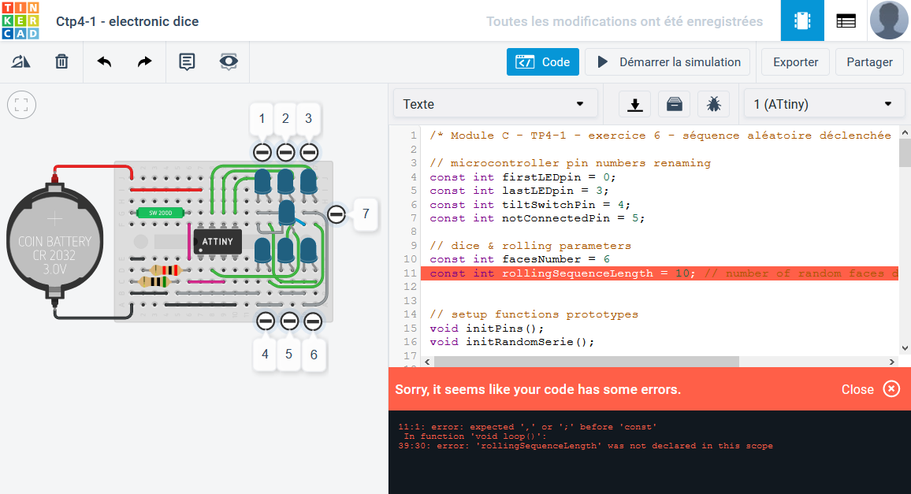

Les cartes Arduino sont aujourd'hui les modèles les plus répandus de cartes à microcontrôleur pour le prototypage de petits systèmes programmables. Elles constituent aussi un excellent support pour s'initier aux bases de la programmation impérative structurée. Avec des variables booléennes, on gère des composants simples (boutons, leds, moteurs à courant continu) et on peut déjà exploiter toutes les structures de contrôles du langage (if, for, etc.).
Aucune limitation n'empêche d'aller beaucoup plus loin pour exploiter des composants assez élaborés (écrans LCD, claviers codés, moteurs pas‑à‑pas…) et mettre en œuvre des programmes modulaires de contrôle commande de systèmes temps‑réel.

Le logiciel de simulation en ligne de circuits électronique Tinkercad est une application web qui inclut dans sa panoplie divers composants programmables, notamment la carte Arduino Uno et le microcontrôleur Atmel ATtiny85C. Cet environnement permet de se passer complètement de matériel pour expérimenter des circuits programmables élémentaires, avec tous les avantages que cela comporte en termes de coût et de sécurité, mais aux approximations de simulation près.
De plus, Tinkercad fournit un environnement de programmation réduit au strict minimum, idéal pour débuter : un simple clic sur un bouton simule la chaîne de compilation, le téléchargement du programme sur la carte, et son exécution.
Ce chapitre a pour objectif de donner toutes les connaissances de base du contexte technologique dans lequel sont puisés les éléments de programmation des cartes à microcontrôleur exposés dans ce module de formation.
L'univers Arduino
Bref historique
Les cartes Arduino sont des cartes électroniques de développement destinées au prototypage de systèmes de contrôle/commande A.
Inventées en Italie dans les années 2000 W, elles ont « démocratisé » aux amateurs et au monde éducatif la pratique des microcontrôleurs programmés en langage de haut niveau (et non pas en langage d'assemblage, qui était usuellement employé auparavant).
Le succès des cartes Arduino tient à une stratégie commerciale audacieuse adoptée dès le départ par leurs concepteurs A :
- open‑source ‒ toutes les données techniques des cartes et les codes sources sont publiques et libres de droit, donc n'importe qui peut commercialiser des cartes, mais sans mentionner la marque Arduino ;
- low‑cost ‒ un carte Arduino Uno authentique coûte environ 20 € TTC, son équivalent chinois 3 € ;
- all‑inclusive ‒ l'environnement de développement intégré Arduino IDE, inspiré des plateformes de développement Wiring W et Processing W, permet de programmer les cartes ; rudimentaire mais très facile à prendre en main, cette application intègre tous les outils essentiels de développement (fichiers sources, chaîne de compilation C++, protocoles de téléchargement, bibliothèques les plus courantes, exemples types, moniteur série, etc.) ;
- one‑line ‒ un site internet (cf. le lien [A↗] supra) regroupe tous les services gratuits indispensables pour les développeurs :
- les liens de téléchargement des composants logiciels ;
- la documentation technique des cartes et des bibliothèques de fonctions ;
- un éditeur de code en ligne, Arduino Web Editor, associé à un espace de stockage cloud qui est mis à la disposition de tout internaute ayant créé un compte.
Développement et concurrence
Rapidement s'est développé tout un écosystème de modules électroniques d'extension (Ethernet, Wi‑Fi, capteurs, cartes de puissance…) avec leur bibliothèques de fonctions appropriées, constituant un véritable framework W.
C'est la richesse de cet écosystème qui rend les cartes Arduino si attractives.
En même temps que la marque Arduino étoffait sa gamme de cartes A, des concurrents ont développé des architectures matérielles plus performantes. Certaines – Teensy , Wemos … – sont compatibles avec l'environnement de programmation Arduino, moyennant quelques adaptations (on parle de carte tierce, en anglais third‑party board).
Architecture de la carte Arduino Uno
Généralités
Toutes les cartes Arduino ou compatibles emploient un microcontrôleur W. Ce dernier peut différer d'un modèle de carte à l'autre.
Un microcontrôleur est un composant programmable qui intègre notamment :
- un ou plusieurs microprocesseur(s) W (en anglais, central processing unit ou CPU) qui chacun constituent un cœur du microcontrôleur ;
- des unités de mémoire de différents types (flash, SRAM, EEPROM…) pour stocker le programme embarqué, et les données exploitées en cours d'exécution ;
- des circuits spécialisés pour assurer diverses tâches (bus de communication, convertisseur analogique numérique, etc.).
Pour chaque microcontrôleur, un compilateur C++ spécifique, au moins conforme à la norme C++11 a été développé. Ce sont ces compilateurs qui sont mis en œuvre par le logiciel Arduino IDE pour produire un code exécutable à partir du code source fourni par le programmeur.
- Les microcontrôleurs employés sur les cartes Arduino n'ont qu'un seul cœur. Sur les modèles de cartes les plus courants, il s'agit d'un cœur AVR W dont les performances peuvent sembler modestes en comparaison d'autres architectures mais qui sont excellentes au regard du coût financier.
- Contrairement à une carte de développement de type Raspberry Pi, une carte Arduino ne peut gérer qu'un seul programme embarqué à la fois.
La carte Uno et son microcontrôleur
La carte Arduino Uno est basée sur un microcontrôleur Atmel ATmega328P W qui se présente en boîtier DIP (dual inline package W) ou SMD (surface mounted device W) – cf. sa documentation technique .
Dans la gamme des cartes Arduino, c'est le modèle le plus vendu car il apporte un excellent compromis en termes de performances, de robustesse et de coût.
Actuellement commercialisée dans la version Rev3, la carte Arduino Uno a les caractéristiques suivantes A :
- processeur ATmega328P à cœur AVR – architecture Harvard RISC 8 bits (il faut donc 4 temps d'horloge pour charger dans un registre de calcul un entier long codé sur 32 bits) ;
- fréquence d'horloge 16 MHz (soit une période de 62,5 ns par opération) ;
- mémoire flash (non volatile) pour le programme embarqué (code exécutable) de 32 ko ;
- mémoire SRAM (volatile, statique) pour les données de 2 ko ;
- mémoire EEPROM (non volatile) complémentaire pour les données 1 ko ;
- port numérique d'entrées‑sorties 0 ‑ 5 V à 14 broches avec 1 led intégrée ; (pins 0‑13) dont 6 modulables (PWM) sur 8 bits (0-255) ;
- convertisseur analogique numérique (CAN) unipolaire ajustable 5 V sur 10 bits (0‑1023), multiplexé sur un port à 6 broches (pins A0‑A5) ;
- protocoles de communication embarqués UART, SPI, I2C ;
- port USB type B qui combine alimentation et convertisseur pour liaison série via un microcontrôleur Atmel ATmega16U2 dédié et un circuit oscillant à quartz 16 MHz ;
- prise d'alimentation externe 7 ‑ 12 V barrel jack ⌀5,5 × 2,1 mm.
Une carte Arduino Uno coûte environ 20 €, pèse 25 g et mesure hors‑tout 69 × 54 mm.
Le plan de brochage (pinout) de la carte est disponible au lien suivant .
En réalité, le port analogique de la carte est polyvalent. Ses six broches A0 à A5 peuvent également faire office d'entrées‑sorties logiques (ou booléennes) – cf. plan de brochage et chap. C2‑VII .
Interface matérielle pour l'utilisateur
L'interface matérielle utilisateur de la carte est minimale. Elle comporte (cf. photo supra) :
- un bouton‑poussoir reset et une broche associée qui permettent, respectivement par appui ou par signal logique, de réinitialiser (c'est‑à‑dire reprendre au début) l'exécution du programme utilisateur ;
- une led intégrée (built‑in LED) qui donne l'image du niveau logique de tension sur la broche nº 13 du port d'entrées‑sorties numérique ; cette led permet en particulier de tester un programme élémentaire de clignotement (blink) sans recourir à du matériel supplémentaire ;
- d'autres leds – ON, TX, RX – qui permettent de vérifier la mise sous tension de la carte et l'activité sur les broches de communication série avec le terminal de programmation.
Autres cartes Arduino et dispositifs programmables
Il existe une trentaine de modèles de cartes Arduino authentiques, et plus d'une centaines de cartes compatibles W. Il n'est pas question de les détailler toutes ici, mais seulement quelques unes qui présentent un intérêt technologique au regard de leurs caractéristiques et performances.
La carte Arduino Nano
La carte Arduino Nano présente par rapport à une carte Uno :
- des caractéristiques techniques et un coût comparables,
- mais un encombrement beaucoup plus réduit.
Elle est donc privilégiée pour les systèmes embarqués.
En contre‑partie, sa petite taille la rend moins facile à manipuler et moins robuste à l'usage. Elle ne représente pas un choix pertinent pour les expérimentations usuelles en laboratoire.
Ses principales caractéristiques sont les suivantes A :
- processeur Atmel ATmega328P SMD à cœur AVR (8 bits) ;
- fréquence d'horloge 16 MHz ;
- mémoire flash 32 ko (programme) ;
- mémoire SRAM 2 ko (données) ;
- mémoire EEPROM 1 ko ;
- port numérique 5 V 14 broches (6 en PWM sur 8 bits) avec 1 led intégrée ;
- CAN unipolaire ajustable 5 V 10 bits, 8 broches ;
- protocoles UART, SPI, I2C ;
- port USB mini A qui combine alimentation et convertisseur pour liaison série via un circuit intégré FTDI FT232RL W (avec oscillateur interne) ;
- coût 20 €, poids 7 g, dimensions 45 × 18 mm.
Le plan de brochage (pinout) de la carte est disponible au lien suivant .
La carte Arduino Mega 2560
La carte Arduino Mega présente par rapport à une carte Uno :
- des volumes mémoires plus importants, tant pour le programme que les données,
- des entrées‑sorties plus nombreuses dans toutes les catégories (numériques, analogiques, séries).
Un peu plus encombrante et plus chère, elle n'apporte en revanche aucun gain en vitesse d'exécution.

Dans sa version Rev3, ses principales caractéristiques sont les suivantes A :
- processeur Atmel ATmega2560 SMD à cœur AVR (8 bits) ;
- fréquence d'horloge 16 MHz ;
- mémoire flash 256 ko (programme) ;
- mémoire SRAM 8 ko (données) ;
- mémoire EEPROM 4 ko ;
- port numérique 5 V 54 broches (15 en PWM sur 8 bits) avec 1 led intégrée ;
- CAN unipolaire ajustable 5 V 10 bits, 8 broches ;
- protocoles UART (4 ports), SPI, I²C ;
- port USB type B qui combine alimentation et convertisseur pour liaison série via un microcontrôleur Atmel ATmega 16U2 dédié et un circuit oscillant à quartz 16 MHz ;
- alimentation externe 7 ‑ 12 V barrel jack ⌀5,5 × 2,1 mm ;
- coût 35 €, poids 37 g, dimensions 102 × 54 mm.
Le plan de brochage (pinout) de la carte est disponible au lien suivant .
La carte Arduino Due
La carte Arduino Due présente par rapport à une carte Mega :
- un encombrement et un coût identiques,
- mais une capacité mémoire, une précision et une vitesse d'exécution significativement supérieures grâce un microcontrôleur plus performant.
En contre‑partie, son port numérique opère seulement à la tension de 3,3 V et ses ports USB micro sont moins robustes aux manipulations répétées.
Ses principales caractéristiques sont les suivantes A :
- processeur Atmel SAM3X8E ARM Cortex‑M3 W SMD 32 bits ;
- fréquence d'horloge 84 MHz ;
- mémoire flash 512 ko (programme et données) ;
- mémoire SRAM 96 ko (données) ;
- port numérique 3,3 V 54 broches (12 en PWM sur 12 bits) avec 1 led intégrée ;
- CAN unipolaire ajustable 3,3 V 12 bits, 12 broches ;
- CNA 0,6 - 2,7 V 12 bits, 2 broches ;
- protocoles UART (5 ports), SPI, I²C, CAN ;
- 2 ports USB micro B :
- un port de programmation (le plus proche du connecteur d'alimentation externe), qui combine alimentation et convertisseur pour liaison série via un microcontrôleur Atmel ATmega16U2 dédié et un circuit oscillant à quartz 16 MHz ;
- un port natif CDC W (communication device class) directement relié au microcontrôleur ; ce port permet notamment d'émuler et de communiquer avec des dispositifs de type clavier, souris, etc. A ;
- alimentation externe 7 ‑ 12 V barrel jack ⌀5,5 × 2,1 mm ;
- coût 35 €, poids 36 g, dimensions 102 × 54 mm.
Le plan de brochage (pinout) de la carte est disponible au lien suivant .
Le microcontrôleur Atmel ATtiny85
Dans son boîtier DIP 8 broches, le microcontrôleur Atmel ATtiny85 constitue une solution matérielle minimale en prototypage pour exécuter un programme Arduino.
Très peu encombrant, sobre en énergie, très économique, il remplace avantageusement une carte Nano lorsque peu d'entrées‑sorties sont requises.
Par absence de port USB, un montage ad hoc ou une carte spécifique de programmation avec un convertisseur USB‑série (cf. la photo ci‑dessous) est nécessaire pour téléverser le programme via le logiciel Arduino IDE.
Les caractéristiques de ce microcontrôleur sont les suivantes (plusieurs valeurs selon le modèle) :
- architecture Harvard 8 bits ;
- fréquence d'horloge 10 ou 20 MHz ;
- mémoire flash 2 à 8 ko (programme) ;
- mémoire SRAM 128 à 512 o (données) ;
- mémoire EEPROM 128 à 512 o ;
- port d'entrées‑sorties polyvalent (GPIO) 6 broches :
- CAN ajustable 5 V sur 8 ou 10 bits, 4 broches ;
- port numérique 5 V, 6 broches (3 en pwm sur 8 bits) ;
- protocoles UART, SPI, I²C.
- coût 2 €, poids 1 g, dimensions 10 × 7 mm.
Le plan de brochage (pinout) du microcontrôleur est disponible au lien suivant .
Cartes tierces à SoC Wi‑Fi
Avec l'essor de l'Internet des objets W (Internet of things, abrégé IoT), certains fabricants de puce ont développés des circuits intégrés dits SoC – sigle anglais signifiant system‑on‑chip – qui associent un microcontrôleur à une antenne Wi‑Fi.
C'est notamment le cas du fabricant chinois Espressif qui a développé les gammes de modules à microcontrôleur ESP8266 W et ESP32 W – cf. le module ESP‑32S en photo ci‑contre, dont l'antenne est apparente et dont le microcontrôleur est protégé par un blindage.
Les microcontrôleurs ESP8266 et ESP32 sont basés sur des processeurs intégrés Xtensa à architecture RISC 32 bits conçus par l'entreprise californienne Tensilica W (cf. le microcontrôleur ESP32 en photo ci‑contre). La plupart sont fabriqués par des sous‑traitants comme le Taïwanais TSMC W.
Ces microcontrôleurs sont programmables dans divers langages comme Lua (avec le firmware NodeMCU – pour microcontroller unit), Python (avec le firmware MicroPython)… et en C++ via l'environnement Arduino.
Dans le commerce, on trouve aussi toutes sortes de cartes de développements (development kit) qui embarquent un module à microcontrôleur ESP8266 W ou ESP32. Les deux exemples décrits ci‑dessous sont typiques de ceux que l'on peut utiliser en prototypage d'objets connectés.
À peine plus grande qu'une Arduino Nano, la carte SBC‑NodeMCU de l'assembleur allemand Joy‑It présente des caractéristiques nettement supérieures, et pour un prix deux fois moindre.
- microcontrôleur ESP8266 à processeur Tensilica Xtensa LX106 32 bits embarqué dans un module sESP‑12E ;
- fréquence d'horloge jusqu'à 160 MHz ;
- mémoire flash interne 96 ko (programme) ;
- mémoire SRAM 64 ko (données) ;
- mémoire flash externe 4 Mo ;
- module Wi‑Fi 2,4 GHz normes 802.11 b/g/n
- port d'entrées‑sorties polyvalent (GPIO) 16 broches en 3,3 V :
- CAN ajustable sur 10 bits, 1 broche ;
- 16 broches PWM sur 10 bits ;
- 1 bouton‑poussoir (« flash ») et 2 led intégrés (tous câblés en logique négative) ;
- protocoles UART, SPI, HSPI, I²C, SDIO ;
- port USB micro B qui combine alimentation et convertisseur pour liaison série via un ASIC Silicon Labs CP2102 (à oscillateur interne 48 MHz) ;
- coût 10 €, poids 8 g, dimensions 49 × 26 mm.
Le plan de brochage de la carte (pinout) est disponible au lien suivant .
De dimensions similaires à la précédente, la carte NodeMCU ESP32 de la même marque Joy‑It a des caractéristiques encore supérieures, pour un prix à peine plus cher.
- microcontrôleur ESP32 à processeur Tensilica Xtensa LX6 32 bits double cœur embarqué dans un module ESP‑WROOM‑32 ;
- fréquence d'horloge jusqu'à 240 MHz ;
- mémoire flash 4 Mo (programme) ;
- mémoire SRAM 512 ko (données) ;
- module Wi‑Fi 2,4 GHz normes 802.11 b/g/n ;
- module Bluetooth classic et LE (low energy) ;
- port d'entrées‑sorties polyvalent (GPIO) 16 broches en 3,3 V :
- CAN ajustable sur 12 bits, 15 broche ;
- CNA sur 8 bits, 2 broche ;
- 16 broches PWM sur 16 bits ;
- 1 bouton‑poussoir (« boot ») et 2 led intégrés (tous câblés en logique négative) ;
- protocoles UART (2), SPI, VSPI, I²C, SDIO ;
- port USB micro B qui combine alimentation et convertisseur pour liaison série via un ASIC Silicon Labs CP2102 (à oscillateur interne 48 MHz) ;
- coût 12,5 €, poids 8 g, dimensions 48 × 38 mm.
Le plan de brochage de la carte (pinout) est disponible au lien suivant .
L'implémentation du convertisseur USB‑Serial par un ASIC W (application‑specific integrated circuit) nécessite parfois l'installation d'un pilote sur le système d'exploitation du terminal de programmation. C'est en particulier le cas avec Microsoft Windows ou Mac OS pour des ASIC comme :
L'environnement intégré de développement Arduino IDE
Arduino IDE (integrated development environment) est un logiciel libre (licence GNU GPL version 2 W) et multiplateforme (Windows, Linux, MacOS) pour programmer les cartes Arduino et compatibles.
Les dernières versions stables 1.8 présentent peu d'évolutions depuis plusieurs années mais une version 2.0 est en préparation (et déjà disponible en bêta W).
Développé principalement en langage Java, le logiciel Arduino IDE s'exécute sur la machine virtuelle JRE (Java Runtime Environment) W.
Cette solution logicielle assure une excellente portabilité. Ainsi, le logiciel Arduino IDE fonctionne sur n'importe quel poste de travail dès lors que la machine virtuelle JRE est installée et opérationnelle.
Installation
Comme pour la plupart des logiciels multiplateforme, il est conseillé d'effectuer le téléchargement depuis la page web dédiée de l'éditeur, ici A pour l'IDE Arduino.
Quant à l'installation, la procédure est très différente selon le système d'exploitation :
- Sur un poste de travail fonctionnant sous Windows, elle ne pose aucune difficulté. Il suffit de se laisser guider par la procédure d'exécution du setup.
- Sur un poste de travail fonctionnant sous Linux en revanche, avec les versions 1.8.x, il est déconseillé de passer par l'utilitaire usuel de bibliothèque logicielle ou un installateur de paquets, car le plus souvent, ils téléchargent une version ancienne.
- télécharger le fichier d'archive depuis la page de téléchargement supra, en sélectionnant bien celui compatible avec l'architecture du poste de travail (32 ou 64 bits, à processeur ARM ou non) ;
- extraire le contenu de ce fichier d'archive dans le répertoire
/optdédié aux applications optionnelles ; pour cela, il suffit d'ouvrir un terminal de commande dans le répertoire de téléchargement puis de saisir et exécuter une à une les commandes ci‑dessous – à adapter selon la version téléchargée : - la 4e commande – suppression du fichier d'archive téléchargé – est facultative (on pourrait en avoir besoin pour une installation sur une autre machine Linux) ;
- mais qu'il ne faut pas supprimer le répertoire extrait
arduino-1.8.19après l'exécution du script d'installation (en effet, ce répertoire constitue l'essentiel du logiciel) ; - depuis le même terminal, exécuter le script d'installation :
sudo ./install.sh - pour permettre à l'utilisateur du poste de travail d'utiliser les ports USB pour le téléversement des programmes sur les cartes, il faut également exécuter le script d'autorisation (attention, sans la commande
sudo) :
./arduino-linux-setup.sh $USER
après quoi il est nécessaire de redémarrer le poste de travail :
sudo reboot - elle effectue l'installation directement dans le répertoire de téléchargement, ce qui n'est guère satisfaisant ;
- elle emploie une commande ad‑hoc pour autoriser l'utilisateur à exploiter les ports USB lors du téléversement des programmes sur les cartes.
La procédure recommandée consiste à :
sudo mv arduino-1.8.19-linux64.tar.xz /opt cd /opt sudo tar -xvf arduino-1.8.19-linux64.tar.xz sudo rm arduino-1.8.19-linux64.tar.xz cd arduino-1.8.19 ls -l
Sur le site www.arduino.cc, la page web A consacrée à cette procédure est un peu datée :
Fichiers sources et documentation
Dans une installation par défaut, le logiciel Arduino IDE comprend en libre accès :
- tous les fichiers sources fondamentaux qui constituent ce qu'on appelle le noyau du framework ;
- quelques modules de bibliothèque usuels, qui sont très utiles pour employer des composants matériels périphériques (shield Ethernet, écran LCD, capteurs, etc.) .
Ces fichiers sources sont codés en langage C++ pour programmer avec des instructions de haut niveau n'importe quelle carte Arduino.
Les modules de bibliothèque Arduino fournissent au codeur des types, des classes, des constantes (ou pseudo‑constantes) et des fonctions spécifiques, faciles à employer :
- tous ces éléments de langage sont documentés sur le site internet Arduino A ;
- leurs fichiers sources sont partagés et consultables en libre accès sur la plateforme Github A.
Pour accéder à la documentation technique des cartes tierces (cf. supra ), il faut consulter d'autres sites. En particulier, pour les pages de références logicielles des cartes à SoC ESP8266, on pourra consulter ce lien .
Chaînes de compilation
Le logiciel Arduino IDE incorpore par défaut toutes les chaînes de compilation GCC (cf. chap. CI‑2) développées pour les microcontrôleurs des cartes Arduino, afin de générer du code exécutable.
En particulier, il fait appel aux chaînes de compilation :
- AVR‑GCC pour les microcontrôleurs à cœur AVR (Uno, Nano, Mega…) ;
- GCC‑ARM pour les microcontrôleurs à cœur ARM (Due, Zero…).
Avec l'IDE Arduino, il n'est pas possible de choisir la version de la norme (cf. chap. C1‑II ) du langage C++ qui est appliquée lors de la compilation. Néanmoins, on peut savoir quelle est cette version en codant dans la fonction setup les deux instructions :
Serial.begin(9600); Serial.println(__cplusplus);
En compilant et téléversant le code dans une carte Arduino Uno, on obtient usuellement l'affichage 201103. C'est ici la norme C++11 qui est appliquée.
Interface utilisateur
En version 1.8.x, l'interface utilisateur du logiciel Arduino IDE est assez simple. Elle présente (cf. figure ci‑contre) :
- une barre de 5 menus déroulants très classiques (
Fichiers,Éditions, etc.) ; - une barre avec 6 boutons de raccourcis vers les commandes les plus usuelles ;
- un cadre principal d'édition de code multi‑onglets, avec par défaut un fond blanc et une coloration syntaxique du code source peu contrastée ;
- sous le cadre principale, un cadre complémentaire à fond noir de compte-rendu (
log) de compilation et transfert.
L'appui sur le bouton à droite de la barre de raccourcis déclenche l'ouverture d'une fenêtre supplémentaire qui émule un moniteur série pour mettre en œuvre des entrées/sorties textuelles entre l'ordinateur et la carte à microcontrôleur.
Via le menu Outils, on peut également obtenir avec le traceur série un affichage sur un graphique à deux axes, avec en abscisses le temps et en ordonnée les valeurs issues de la carte.
Avertissements de compilation
En version 1.8.x, dans la fenêtre ouverte via le menu Fichier/Préférences, on trouve :
- une rubrique relative à l'affichage ou non les résultats détaillés de la compilation et du téléversement du programme dans la carte ; il est recommandé de cocher ces cases pour pouvoir diagnostiquer les problèmes en cas d'échec ;
- juste en dessous, un menu déroulant pour choisir les avertissements du compilateur (il correspond à l'option
-Wde la commandegcc– cf chap. C1‑II ) ; là encore, il est recommandé de choisir l'exhaustivité, c'est‑à‑dire l'optionTout.
Emploi d'un éditeur de code externe
En version 1.8.x, l'apparence par défaut de l'interface utilisateur du logiciel Arduino IDE n'est pas idéale pour la programmation. Il est possible de l'améliorer, en particulier installer un mode sombre qui fait mieux ressortir la coloration syntaxique. Toutefois, la procédure n'est pas élémentaire A.
Par ailleurs, la fenêtre d'édition de code permet de gérer plusieurs onglets (chacun donnant accès à un fichier distinct). Mais contrairement à la plupart des applications de développement et des éditeurs de code, il n'y a pas de panneau latéral pour naviguer dans les fichiers d'un projet.
C'est pourquoi dans le cadre d'une programmation multi‑fichiers, il est en général préférable d'utiliser un éditeur externe comme Sublime Text, Atom, ou autre… Pour cela, il suffit de cocher l'option idoine dans la fenêtre Préférences accessible via le menu Fichier (cf. figure ci‑contre).
- La fenêtre d'édition d'Arduino IDE apparaît alors grisée et n'accepte plus les modifications directes.
- En revanche, lorsqu'on modifie et enregistre des modifications avec l'éditeur externe, elles apparaissent aussitôt dans la fenêtre d'édition d'Arduino IDE et on peut vérifier si elles sont compilables en cliquant directement sur le bouton
Vérifier.
Gestionnaire de cartes
En plus des cartes Arduino ou leurs clones, il est possible avec l'IDE Arduino de programmer des cartes tierces (cf. supra ). Mais pour cela, il faut préalablement intégrer à l'IDE la chaîne de compilation spécifique à chaque microcontrôleur embarqué sur les cartes. On procède en deux étapes.
- Dans la fenêtre de l'IDE, via le menu
Fichier/Préférences, on trouve une barre d'adresse dans laquelle on copie l'URL du site de téléchargement des chaînes de compilation (cf. la capture d'écran ci‑dessous). - Via le menu :
Outils/Type de carte/Gestionnaire de cartes
on peut alors ouvrir la liste des cartes prises en charge, puis sélectionner une nouvelle famille de cartes à intégrer, et cliquer sur le boutonInstaller.
Pour les cartes à SoC ESP8266, il s'agit de l'URL ci‑dessous :
https://arduino.esp8266.com/stable/package_esp8266com_index.json
Pour les cartes à SoC ESP8266, il s'agit de la rubrique figurant sur la capture d'écran ci‑dessous (ici, les cartes sont déjà installées, c'est indiqué à droite du numéro de version, et le bouton Installer est grisé).
L’environnement de simulation Tinkercad
Bref descriptif
Tinkercad est une application web gratuite conçue pour le monde éducatif par l’entreprise américaine Autodesk, pionnère et leader dans le domaine des logiciels de CAO (conception assistée par ordinateur, en anglais CAD pour computer-aided design).
Cette application permet notamment de concevoir et simuler des prototypes de circuits électroniques composés, comme dans la réalité, de :
- platines d’expérimentation (breadboards),
- fils de connexion (jumpers),
- composants usuels en électronique (résistances, condensateurs, etc.),
- quelques circuits intégrés, dont des composants programmables.
Comme la plupart des applications web, elle requiert la création d'un compte utilisateur avec une adresse électronique. Elle offre alors à chaque souscripteur un espace de stockage (sur le cloud) pour mémoriser ses conceptions.
Premiers pas
La prise en main de l'application est très simple et intuitive. Elle fait l'objet d'un exercice de travaux pratiques . Pour plus de détails, on trouve toutes sortes de tutoriels sur internet Y.
Création d'un circuit
L'espace de travail simule la technologie du prototypage sur platine d'expérimentation (breadboard).
- On implante des composants par glisser-déposer depuis un panneau latéral sur la droite.
- Le paramétrage des composants procède via un pop-up contextuel.
- Les liaisons électriques entre composants s'établissent en cliquant sur leurs bornes pour « tirer » des fils dont on peut changer la couleur.
Programmation
Le panneau latéral comporte deux composants programmables :
- la carte Arduino Uno,
- le microcontrôleur miniature Atmel ATtiny85 (8 broches).
Ces deux composants se programment dans un volet éditeur de texte rudimentaire, expansible par le bouton « Code » situé en haut à droite de la fenêtre principale. En choisissant le mode « Texte », on peut composer le programme directement en langage C++ (norme de 1998).
En bas du volet d'édition se trouve un bouton pour activer la simulation du moniteur série et sa zone de saisie. On peut ensuite activer la fenêtre graphique pour simuler le traceur série.
Simulation
Un clic sur le bouton ▶ Démarrer la simulation déclenche d'abord la chaîne de compilation du code source.
En l’absence d’erreur, la simulation de l’exécution du programme commence, un chronomètre intitulé « durée du simulateur » indiquant dans la barre supérieure le temps écoulé depuis le début de l'exécution. Le bouton mute en ■ Arrêter la simulation pour pouvoir terminer l'exécution.
Attention : un arrêt n'est pas une mise en pause ! Un nouvel appui sur le bouton « Démarrer » recommence entièrement le processus compilation-exécution.
En cas d’erreur(s), la ou les lignes de code « incriminées » sont mises en surbrillance rouge et des messages de diagnostic sont affichés dans un volet à fond sombre qui simule une console d'exécution à la place du moniteur série.
 En affichant la valeur de la variable d'environnement __cplusplus comme supra , on obtient maintenant la valeur 201402 (norme C++14) mais il n'y a pas si longtemps, on obtenait 199711 (norme C++98).
Évaluation
Avantages
Aux programmeurs débutants, Tinkercad procure deux avantages notables :
- pouvoir se concentrer sur les algorithmes sans être parasité par des difficultés annexes (chaîne de compilation, flux d’entrées/sorties, pannes de matériel, etc.) ;
- mettre en œuvre des composants animés dont le comportement est visuel et facile à interpréter (leds, boutons, etc.).
Inconvénients
Toutefois, Tinkercad reste un environnement d'initiation et ses inconvénients doivent être soulignées. En particulier :
- la réaction de la partie matérielle (mouvement, force, chaleur…) n’est pas simulée alors qu’elle est souvent indispensable à la vérification du bon fonctionnement du programme ; par exemple, dans un système motorisé, il n'est pas possible de simuler des butées de fin de courses qui arrêteraient le mouvement ;
- la gamme de composants est restreinte et non extensible ; par exemple, ni les cartes Arduino Nano et Mega, très usitées dans la pratique, ne sont pas simulées ;
- de même, il est impossible de créer de nouvelles bibliothèques, donc de développer une programmation vraiment modulaire ;
- l’éditeur de code est rudimentaire (fond clair, coloration syntaxique peu contrastée, pas d’auto-complétion lors de la saisie, pas de formulaire de remplacement) ; ces défauts et lacunes se font sentir dès que le code source s'étend sur plus d'une page.